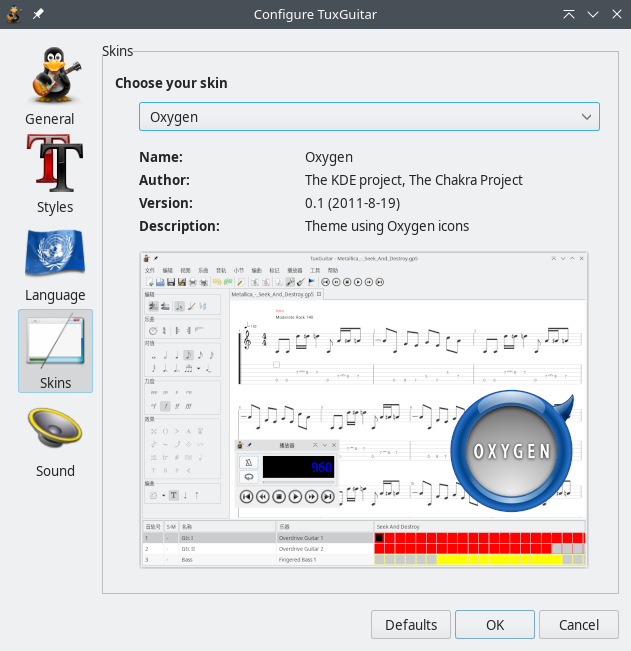

TuxGuitar supports custom skins. The skins modify toolbar icons and dialog buttons.
The default skin for version 1.0 is Lavender, and currently there are 2 more skins: Ersplus and Blue_serious. You can change the current skin in Tools→Settings dialog, choosing the Skins tab. Preview of each skin should be available.

To add a new skin, create a new folder in $TUXGUITAR_DIR\share\skins\ and copy the files into that folder. After that skin should be available in the dialog.
Skins are contributed by TuxGuitar users, so if you are a talented designer, feel free to make your own skin or modify the existing one!